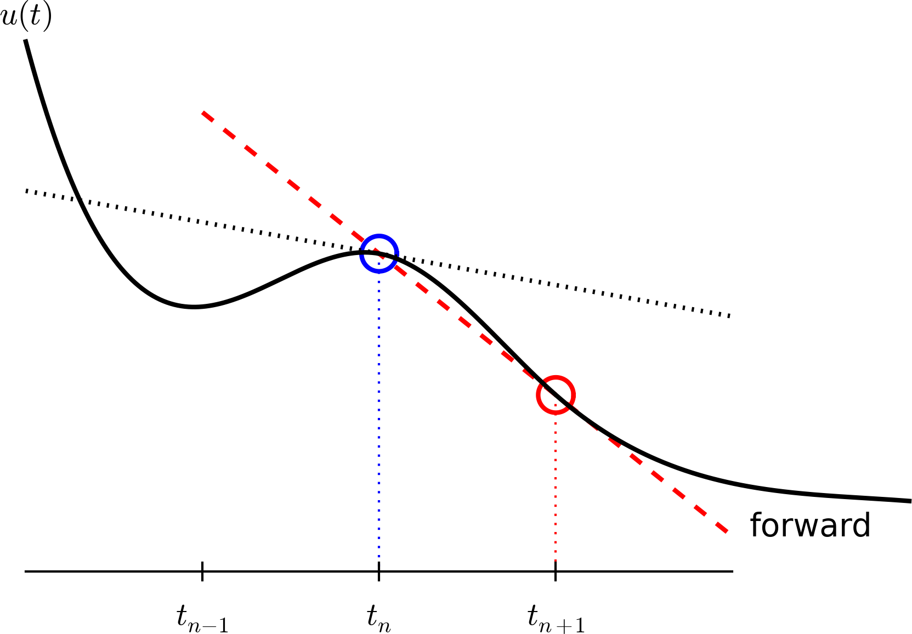
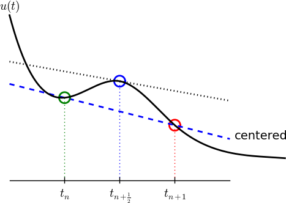

Algorithms and implementations for exponential decay models
MATMEK-4270
Prof. Mikael Mortensen, University of Oslo
Hans Petter Langtangen 1962-2016
- 2011-2015 Editor-In-Chief SIAM J of Scientific Computing
- Author of 13 published books on scientific computing
- Professor of Mechanics, University of Oslo 1998
- Developed INF5620 (which became IN5270 and now MAT-MEK4270)
- Memorial page
A little bit about myself


- Professor of mechanics (2019-)
- PhD (Chalmers University of Technology) in mathematical modelling of turbulent combustion
- Norwegian Defence Research Establishment (2007-2012)
- Computational Fluid Dynamics
- High Performance Computing
- Spectral methods
Principal developer of Shenfun
High performance computing platform for solving PDEs by the spectral Galerkin method. Written in Python (Cython). https://github.com/spectralDNS/shenfun


MAT-MEK4270 in a nutshell
- Numerical methods for partial differential equations (PDEs)
- How to solve the equations, not why
- How do we solve a PDE in practice?
- How do we trust the answer?
- Is the numerical scheme stable? accurate? consistent?
- Focus on programming (github, python, testing code)
- IN5670 -> IN5270 -> MAT-MEK4270 - Lots of old material
Syllabus
Also important stuff, but less so as I will try to put all really important stuff in the lecture notes
- Langtangen, Finite Difference Computing with exponential decay - Chapters 1 and 2.
- Langtangen and Linge, Finite Difference Computing with PDEs - Parts of chapters 1 and 2.
- Langtangen and Mardal, Introduction to Numerical Methods for Variational Problems
Two major approaches
Finite differences
\[ \frac{du(t)}{dt} \approx \frac{u(t+\Delta t) - u(t)}{\Delta t} \]
- Approximate in points
- Uniform grid
- Taylor expansions
Variational methods
\[ \int_{\Omega} u'' v d\Omega = -\int_{\Omega} u' v' d\Omega + \int_{\Gamma} u'v d\Gamma \]
- Approximate weakly
- Finite element method
- Least squares method
- Galerkin method
We will use both approaches to first consider function approximations and then the approximation of equations.
Required software skills
- Our software platform: Python, Jupyter notebooks
- Important Python packages:
numpy,scipy,matplotlib,sympy,shenfun, … - Anaconda Python, conda environments
Assumed/ideal background
- IN1900: Python programming, solution of ODEs
- Some experience with finite difference methods
- Some analytical and numerical knowledge of PDEs
- Much experience with calculus and linear algebra
- Much experience with programming of mathematical problems
- Experience with mathematical modeling with PDEs (from physics, mechanics, geophysics, or …)
Start-up example - exponential decay
Exponential decay model
ODE problem
\[ u'=-au,\quad u(0)=I,\ t\in (0,T] \]
where \(a>0\) is a constant and \(u(t)\) is the time-dependent solution.
- We study first a simple 1D ODE, because this will lead us to the building blocks that we need for solving PDEs!
- We can more easily study the concepts of stability, accuracy, convergence and consistency.
What to learn in the start-up example
- How to think when constructing finite difference methods, with special focus on the Forward Euler, Backward Euler, and Crank-Nicolson (midpoint) schemes
- How to formulate a computational algorithm and translate it into Python code
- How to optimize the code for computational speed
- How to plot the solutions
- How to compute numerical errors and convergence rates
- How to analyse the numerical solution
Finite difference methods
- The finite difference method is the simplest method for solving differential equations
- Satisfy the equations in discrete points, not continuously
- Fast to learn, derive, and implement
- A very useful tool to know, even if you aim at using the finite element or the finite volume method
The steps in the finite difference method
Solving a differential equation by a finite difference method consists of four steps:
- discretizing the domain,
- fulfilling the equation at discrete time points,
- replacing derivatives by finite differences,
- solve the discretized problem. (Often with a recursive algorithm in 1D)
Step 1: Discretizing the domain
The time domain \([0,T]\) is represented by a mesh: a finite number of \(N_t+1\) points
\[ 0 = t_0 < t_1 < t_2 < \cdots < t_{N_t-1} < t_{N_t} = T \]

- We seek the solution \(u\) at the mesh points: \(u(t_n)\), \(n=1,2,\ldots,N_t\).
- Note: \(u^0\) is known as \(I\).
- Notational short-form for the numerical approximation to \(u(t_n)\): \(u^n\)
- In the differential equation: \(u(t)\) is the exact solution
- In the numerical method and implementation: \(u^n\) is the numerical approximation
Step 1: Discretizing the domain
\(u^n\) is a mesh function, defined at the mesh points \(t_n\), \(n=0,\ldots,N_t\) only.
What about a mesh function between the mesh points?
Can extend the mesh function to yield values between mesh points by linear interpolation:
\[ \begin{equation} u(t) \approx u^n + \frac{u^{n+1}-u^n}{t_{n+1}-t_n}(t - t_n) \end{equation} \]
Step 2: Fulfilling the equation at discrete time points
- The ODE holds for all \(t\in (0,T]\) (infinite no of points)
- Idea: let the ODE be valid at the mesh points only (finite no of points)
\[ u'(t_n) = -au(t_n),\quad n=1,\ldots,N_t \]
Step 3: Replacing derivatives by finite differences
Now it is time for the finite difference approximations of derivatives:
\[ u'(t_n) \approx \frac{u^{n+1}-u^{n}}{t_{n+1}-t_n} \]

Step 3: Replacing derivatives by finite differences
Inserting the finite difference approximation in
\[ u'(t_n) = -au(t_n) \]
gives
\[ \begin{equation} \frac{u^{n+1}-u^{n}}{t_{n+1}-t_n} = -au^{n},\quad n=0,1,\ldots,N_t-1 \end{equation} \]
(Known as discrete equation, or discrete problem, or finite difference method/scheme)
Step 4: Formulating a recursive algorithm
How can we actually compute the \(u^n\) values?
- given \(u^0=I\)
- compute \(u^1\) from \(u^0\)
- compute \(u^2\) from \(u^1\)
- compute \(u^3\) from \(u^2\) (and so forth)
In general: we have \(u^n\) and seek \(u^{n+1}\)
The Forward Euler scheme
Solve wrt \(u^{n+1}\) to get the computational formula: \[ u^{n+1} = u^n - a(t_{n+1} -t_n)u^n \]
Let us apply the scheme by hand
Assume constant time spacing: \(\Delta t = t_{n+1}-t_n=\mbox{const}\) such that \(u^{n+1} = u^n (1- a \Delta t)\)
\[ \begin{align*} u^0 &= I,\\ u^1 & = I(1-a\Delta t),\\ u^2 & = I(1-a\Delta t)^2,\\ &\vdots\\ u^{N_t} &= I(1-a\Delta t)^{N_t} \end{align*} \]
Ooops - we can find the numerical solution by hand (in this simple example)! No need for a computer (yet)…
A backward difference
Here is another finite difference approximation to the derivative (backward difference):
\[ u'(t_n) \approx \frac{u^{n}-u^{n-1}}{t_{n}-t_{n-1}} \]
The Backward Euler scheme
Inserting the finite difference approximation in \(u'(t_n)=-au(t_n)\) yields the Backward Euler (BE) scheme:
\[ \frac{u^{n}-u^{n-1}}{t_{n}-t_{n-1}} = -a u^n \]
Solve with respect to the unknown \(u^{n+1}\):
\[ u^{n+1} = \frac{1}{1+ a(t_{n+1}-t_n)} u^n \]
Note
We use \(u^{n+1}\) as unknown and rename \(u^n \longrightarrow u^{n+1}\) and \(u^{n-1} \longrightarrow u^{n}\)
A centered difference
Centered differences are better approximations than forward or backward differences.

The Crank-Nicolson scheme; ideas
Idea 1: let the ODE hold at \(t_{n+\scriptstyle\frac{1}{2}}\). With \(N_t+1\) points, that is \(N_t\) equations for \(n=0, 1, \ldots N_t-1\)
\[ u'(t_{n+\scriptstyle\frac{1}{2}}) = -au(t_{n+\scriptstyle\frac{1}{2}}) \]
Idea 2: approximate \(u'(t_{n+\scriptstyle\frac{1}{2}})\) by a centered difference
\[ u'(t_{n+\scriptstyle\frac{1}{2}}) \approx \frac{u^{n+1}-u^n}{t_{n+1}-t_n} \]
Problem: \(u(t_{n+\scriptstyle\frac{1}{2}})\) is not defined, only \(u^n=u(t_n)\) and \(u^{n+1}=u(t_{n+1})\)
Solution (linear interpolation):
\[ u(t_{n+\scriptstyle\frac{1}{2}}) \approx \frac{1}{2} (u^n + u^{n+1}) \]
The Crank-Nicolson scheme; result
Result:
\[ \frac{u^{n+1}-u^n}{t_{n+1}-t_n} = -a\frac{1}{2} (u^n + u^{n+1}) \]
Solve wrt to \(u^{n+1}\):
\[ u^{n+1} = \frac{1-\frac{1}{2} a(t_{n+1}-t_n)}{1 + \frac{1}{2} a(t_{n+1}-t_n)}u^n \] This is a Crank-Nicolson (CN) scheme or a midpoint or centered scheme.
The unifying \(\theta\)-rule
The Forward Euler, Backward Euler, and Crank-Nicolson schemes can be formulated as one scheme with a varying parameter \(\theta\):
\[ \frac{u^{n+1}-u^{n}}{t_{n+1}-t_n} = -a (\theta u^{n+1} + (1-\theta) u^{n}) \]
- \(\theta =0\): Forward Euler
- \(\theta =1\): Backward Euler
- \(\theta =1/2\): Crank-Nicolson
- We may alternatively choose any \(\theta\in [0,1]\).
\(u^n\) is known, solve for \(u^{n+1}\):
\[ u^{n+1} = \frac{1 - (1-\theta) a(t_{n+1}-t_n)}{1 + \theta a(t_{n+1}-t_n)} u^n \]
Constant time step
Very common assumption (not important, but exclusively used for simplicity hereafter): constant time step \(t_{n+1}-t_n\equiv\Delta t\)
Summary of schemes for constant time step \[ \begin{align} u^{n+1} &= (1 - a\Delta t )u^n \quad (\hbox{FE}) \\ u^{n+1} &= \frac{1}{1+ a\Delta t} u^n \quad (\hbox{BE}) \\ u^{n+1} &= \frac{1-\frac{1}{2} a\Delta t}{1 + \frac{1}{2} a\Delta t} u^n \quad (\hbox{CN})\\ u^{n+1} &= \frac{1 - (1-\theta) a\Delta t}{1 + \theta a\Delta t}u^n \quad (\theta-\hbox{rule}) \end{align} \]
Implementation
Implementation
Model:
\[ u'(t) = -au(t),\quad t\in (0,T], \quad u(0)=I \]
Numerical method:
\[ u^{n+1} = \frac{1 - (1-\theta) a\Delta t}{1 + \theta a\Delta t}u^n \]
for \(\theta\in [0,1]\). Note
- \(\theta=0\) gives Forward Euler
- \(\theta=1\) gives Backward Euler
- \(\theta=1/2\) gives Crank-Nicolson
Requirements of a program
- Compute the numerical solution \(u^n\), \(n=1,2,\ldots,N_t\)
- Display the numerical and exact solution \(u_{e}(t)=e^{-at}\)
- Bring evidence to a correct implementation (verification)
- Compare the numerical and the exact solution in a plot
- Quantify the error \(u_{e}(t_n) - u^n\) using norms
- Compute the convergence rate of the numerical scheme
- (Optimize for speed)
Algorithm
- Store \(u^n\), \(n=0,1,\ldots,N_t\) in an array \(\boldsymbol{u}\).
- Algorithm:
- initialize \(u^0\)
- for \(n=1, 2, \ldots, N_t\): compute \(u^n\) using the \(\theta\)-rule formula
In Python
import numpy as np
def solver(I, a, T, dt, theta):
"""Solve u'=-a*u, u(0)=I, for t in (0, T] with steps of dt."""
Nt = int(T/dt) # no of time intervals
T = Nt*dt # adjust T to fit time step dt
u = np.zeros(Nt+1) # array of u[n] values
t = np.linspace(0, T, Nt+1) # time mesh
u[0] = I # assign initial condition
for n in range(0, Nt): # n=0,1,...,Nt-1
u[n+1] = (1 - (1-theta)*a*dt)/(1 + theta*dt*a)*u[n]
return u, t
u, t = solver(I=1, a=2, T=8, dt=0.8, theta=1)
# Write out a table of t and u values:
for i in range(len(t)):
print(f't={t[i]:6.3f} u={u[i]:g}')In Python
import numpy as np
def solver(I, a, T, dt, theta):
"""Solve u'=-a*u, u(0)=I, for t in (0, T] with steps of dt."""
Nt = int(T/dt) # no of time intervals
T = Nt*dt # adjust T to fit time step dt
u = np.zeros(Nt+1) # array of u[n] values
t = np.linspace(0, T, Nt+1) # time mesh
u[0] = I # assign initial condition
for n in range(0, Nt): # n=0,1,...,Nt-1
u[n+1] = (1 - (1-theta)*a*dt)/(1 + theta*dt*a)*u[n]
return u, t
u, t = solver(I=1, a=2, T=8, dt=0.8, theta=1)
# Write out a table of t and u values:
for i in range(len(t)):
print(f't={t[i]:6.3f} u={u[i]:g}')t= 0.000 u=1
t= 0.800 u=0.384615
t= 1.600 u=0.147929
t= 2.400 u=0.0568958
t= 3.200 u=0.021883
t= 4.000 u=0.00841653
t= 4.800 u=0.00323713
t= 5.600 u=0.00124505
t= 6.400 u=0.000478865
t= 7.200 u=0.000184179
t= 8.000 u=7.0838e-05Plot the solution
We will also learn about plotting. It is very important to present data in a clear and consise manner. It is very easy to generate a naked plot
Plot the solution
But you should always add legends, titles, exact solution, etc. Make the plot nice:-)
u_exact = lambda t, I, a: I*np.exp(-a*t)
u, t = solver(I=I, a=a, T=T, dt=0.8, theta=1)
te = np.linspace(0, T, 1000)
ue = u_exact(te, I, a)
fig = plt.figure(figsize=(6, 4))
plt.plot(t, u, 'bs-', te, ue, 'r')
plt.title('Decay')
plt.legend(['numerical', 'exact'])
plt.xlabel('Time'), plt.ylabel('u(t)');Plotly is a very good alternative
Verifying the implementation
- Verification = bring evidence that the program works
- Find suitable test problems
- Make function for each test problem
- Later: put the verification tests in a professional testing framework
- pytest
- github actions
Comparison with exact numerical solution
What is exact?
There is a difference between exact numerical solution and exact solution!
Repeated use of the \(\theta\)-rule gives exact numerical solution: \[ \begin{align*} u^0 &= I,\\ u^1 &= Au^0 = AI\\ u^n &= A^nu^{n-1} = A^nI \end{align*} \]
Exact solution on the other hand:
\[ u(t) = \exp(-a t), \quad u(t_n) = \exp(-a t_n) \]
Making a test based on an exact numerical solution
The exact discrete solution is
\[ u^n = IA^n \]
Test if your solver gives
\[ \max_n |u^n - IA^n| < \epsilon\sim 10^{-15} \]
for a few precalculated steps.
Tip
Make sure you understand what \(n\) in \(u^n\) and in \(A^n\) means! \(n\) is not used as a power in \(u^n\), but it is a power in \(A^n\)!
Run a few numerical steps by hand
Use a calculator (\(I=0.1\), \(\theta=0.8\), \(\Delta t =0.8\)):
\[ A\equiv \frac{1 - (1-\theta) a\Delta t}{1 + \theta a \Delta t} = 0.298245614035 \]
\[ \begin{align*} u^1 &= AI=0.0298245614035,\\ u^2 &= Au^1= 0.00889504462912,\\ u^3 &=Au^2= 0.00265290804728 \end{align*} \]
The test based on exact numerical solution
def test_solver_three_steps(solver):
"""Compare three steps with known manual computations."""
theta = 0.8
a = 2
I = 0.1
dt = 0.8
u_by_hand = np.array([I,
0.0298245614035,
0.00889504462912,
0.00265290804728])
Nt = 3 # number of time steps
u, t = solver(I=I, a=a, T=Nt*dt, dt=dt, theta=theta)
tol = 1E-14 # tolerance for comparing floats
diff = abs(u - u_by_hand).max()
success = diff < tol
assert success, diff
test_solver_three_steps(solver)Note
We do not use the exact solution because the numerical solution will not equal the exact!
Quantifying the error
Computing the norm of the error
- \(e^n = u^n - u_e(t_n)\) is a mesh function
- Usually we want one number for the error
- Use a norm of \(e^n\)
Norms of a function \(f(t)\):
\[ \begin{align} ||f||_{L^2} &= \left( \int_0^T f(t)^2 dt\right)^{1/2} \\ ||f||_{L^1} &= \int_0^T |f(t)| dt \\ ||f||_{L^\infty} &= \max_{t\in [0,T]}|f(t)| \end{align} \]
Norms of mesh functions
- Problem: \(f^n =f(t_n)\) is a mesh function and hence not defined for all \(t\). How to integrate \(f^n\)?
- Idea: Apply a numerical integration rule, using only the mesh points of the mesh function.
The Trapezoidal rule:
\[ ||f^n|| = \left(\Delta t\left(\scriptstyle\frac{1}{2}(f^0)^2 + \scriptstyle\frac{1}{2}(f^{N_t})^2 + \sum_{n=1}^{N_t-1} (f^n)^2\right)\right)^{1/2} \]
Common simplification yields the \(\ell^2\) norm of a mesh function:
\[ ||f^n||_{\ell^2} = \left(\Delta t\sum_{n=0}^{N_t} (f^n)^2\right)^{1/2} \]
Norms - notice!
- The continuous norms use capital \(L^2, L^1, L^\infty{}\)
- The discrete norm uses lowercase \(\ell^2, \ell^1, \ell^{\infty}\)
Implementation of the error norm
\[ E = ||e^n||_{\ell^2} = \sqrt{\Delta t\sum_{n=0}^{N_t} (e^n)^2} \]
Python code for the norm:
How about computational speed?
The code is naive and not very efficient. It is not vectorized!
Vectorization
Vectorization refers to the process of converting iterative operations on individual elements of an array (or other data structures) into batch operations on entire arrays.
For example, you have three arrays
\[ \boldsymbol{u} = (u_i)_{i=0}^N, \boldsymbol{v} = (v_i)_{i=0}^N, \boldsymbol{w} = (w_i)_{i=0}^N \]
Now compute
\[ w_i = u_i \cdot v_i, \quad \forall \, i=0, 1, \ldots, N \]
How about computational speed?
The code is naive and not very efficient. It is not vectorized!
Vectorization
Vectorization refers to the process of converting iterative operations on individual elements of an array (or other data structures) into batch operations on entire arrays.
Regular (scalar) implementation:
Vectorized:
Numpy is heavily vectorized! So much so that mult, add, div, etc are vectorized by default!
How about computational speed?
The code is naive and not very efficient. It is not vectorized!
Vectorization
Vectorization refers to the process of converting iterative operations on individual elements of an array (or other data structures) into batch operations on entire arrays.
Vectorization warning
Pretty much all the code you will see and get access to in this course will be vectorized!
Vectorizing the decay solver
Get rid of the for-loop!
u[0] = I # assign initial condition
for n in range(0, Nt): # n=0,1,...,Nt-1
u[n+1] = (1 - (1-theta)*a*dt)/(1 + theta*dt*a)*u[n]How? Difficult because it is a recursive update and not regular elementwise multiplication. But remember
\[ A = (1 - (1- \theta) a \Delta t)/(1 + \theta \Delta t a) \]
\[ \begin{align*} u^1 & = A u^0,\\ u^2 & = A u^1,\\ &\vdots\\ u^{N_t} &= A u^{N_t-1} \end{align*} \]
Vectorized code
u[0] = I # assign initial condition
for n in range(0, Nt): # n=0,1,...,Nt-1
u[n+1] = (1 - (1-theta)*a*dt)/(1 + theta*dt*a)*u[n]Can be implemented as
Why vectorization?
- Python for-loops are slow!
- Python for-loops usually requires more lines of code.
def f0(u, I, theta, a, dt):
u[0] = I
u[1:] = (1 - (1-theta)*a*dt)/(1 + theta*dt*a)
u[:] = np.cumprod(u)
return u
def f1(u, I, theta, a, dt):
u[0] = I
for n in range(0, len(u)-1):
u[n+1] = (1 - (1-theta)*a*dt)/(1 + theta*dt*a)*u[n]
return u
I, a, T, dt, theta = 1, 2, 8, 0.8, 1
u, t = solver(I, a, T, dt, theta)
assert np.allclose(f0(u.copy(), I, theta, a, dt),
f1(u.copy(), I, theta, a, dt))Lets try some timings!
Why vectorization? Timings
Lets try some timings:
<TimeitResult : 2.32 µs ± 94 ns per loop (mean ± std. dev. of 7 runs, 1,000 loops each)><TimeitResult : 2.26 µs ± 68.3 ns per loop (mean ± std. dev. of 7 runs, 1,000 loops each)>Longer array timings
<TimeitResult : 2.86 µs ± 1 µs per loop (mean ± std. dev. of 7 runs, 100 loops each)><TimeitResult : 20.6 µs ± 517 ns per loop (mean ± std. dev. of 7 runs, 100 loops each)>Even longer array:
Length of u = 1001<TimeitResult : 3.86 µs ± 2.34 µs per loop (mean ± std. dev. of 7 runs, 100 loops each)><TimeitResult : 220 µs ± 2.68 µs per loop (mean ± std. dev. of 7 runs, 100 loops each)>Vectorized code takes the same time! Only overhead costs, not the actual computation.
What else is there? Numba
Time it once
<TimeitResult : 48.1 µs ± 115 µs per loop (mean ± std. dev. of 7 runs, 100 loops each)>What else? Cython
%%cython -a
#cython: boundscheck=False, wraparound=False, cdivision=True
cpdef void f3(double[::1] u, int I, double theta, double a, double dt):
cdef int n
cdef int N = u.shape[0]
u[0] = I
for n in range(0, N-1):
u[n+1] = (1 - (1-theta)*a*dt)/(1 + theta*dt*a)*u[n]
returnGenerated by Cython 3.0.10
Yellow lines hint at Python interaction.
Click on a line that starts with a "+" to see the C code that Cython generated for it.
+1: #cython: boundscheck=False, wraparound=False, cdivision=True
__pyx_t_7 = __Pyx_PyDict_NewPresized(0); if (unlikely(!__pyx_t_7)) __PYX_ERR(0, 1, __pyx_L1_error) __Pyx_GOTREF(__pyx_t_7); if (PyDict_SetItem(__pyx_d, __pyx_n_s_test, __pyx_t_7) < 0) __PYX_ERR(0, 1, __pyx_L1_error) __Pyx_DECREF(__pyx_t_7); __pyx_t_7 = 0;
+2: cpdef void f3(double[::1] u, int I, double theta, double a, double dt):
static PyObject *__pyx_pw_54_cython_magic_56487b4d6695ae1d6d1ee138204b704501527e38_1f3(PyObject *__pyx_self,
#if CYTHON_METH_FASTCALL
PyObject *const *__pyx_args, Py_ssize_t __pyx_nargs, PyObject *__pyx_kwds
#else
PyObject *__pyx_args, PyObject *__pyx_kwds
#endif
); /*proto*/
static void __pyx_f_54_cython_magic_56487b4d6695ae1d6d1ee138204b704501527e38_f3(__Pyx_memviewslice __pyx_v_u, int __pyx_v_I, double __pyx_v_theta, double __pyx_v_a, double __pyx_v_dt, CYTHON_UNUSED int __pyx_skip_dispatch) {
int __pyx_v_n;
int __pyx_v_N;
/* … */
/* function exit code */
__pyx_L0:;
}
/* Python wrapper */
static PyObject *__pyx_pw_54_cython_magic_56487b4d6695ae1d6d1ee138204b704501527e38_1f3(PyObject *__pyx_self,
#if CYTHON_METH_FASTCALL
PyObject *const *__pyx_args, Py_ssize_t __pyx_nargs, PyObject *__pyx_kwds
#else
PyObject *__pyx_args, PyObject *__pyx_kwds
#endif
); /*proto*/
static PyMethodDef __pyx_mdef_54_cython_magic_56487b4d6695ae1d6d1ee138204b704501527e38_1f3 = {"f3", (PyCFunction)(void*)(__Pyx_PyCFunction_FastCallWithKeywords)__pyx_pw_54_cython_magic_56487b4d6695ae1d6d1ee138204b704501527e38_1f3, __Pyx_METH_FASTCALL|METH_KEYWORDS, 0};
static PyObject *__pyx_pw_54_cython_magic_56487b4d6695ae1d6d1ee138204b704501527e38_1f3(PyObject *__pyx_self,
#if CYTHON_METH_FASTCALL
PyObject *const *__pyx_args, Py_ssize_t __pyx_nargs, PyObject *__pyx_kwds
#else
PyObject *__pyx_args, PyObject *__pyx_kwds
#endif
) {
__Pyx_memviewslice __pyx_v_u = { 0, 0, { 0 }, { 0 }, { 0 } };
int __pyx_v_I;
double __pyx_v_theta;
double __pyx_v_a;
double __pyx_v_dt;
#if !CYTHON_METH_FASTCALL
CYTHON_UNUSED Py_ssize_t __pyx_nargs;
#endif
CYTHON_UNUSED PyObject *const *__pyx_kwvalues;
PyObject *__pyx_r = 0;
__Pyx_RefNannyDeclarations
__Pyx_RefNannySetupContext("f3 (wrapper)", 0);
#if !CYTHON_METH_FASTCALL
#if CYTHON_ASSUME_SAFE_MACROS
__pyx_nargs = PyTuple_GET_SIZE(__pyx_args);
#else
__pyx_nargs = PyTuple_Size(__pyx_args); if (unlikely(__pyx_nargs < 0)) return NULL;
#endif
#endif
__pyx_kwvalues = __Pyx_KwValues_FASTCALL(__pyx_args, __pyx_nargs);
{
PyObject **__pyx_pyargnames[] = {&__pyx_n_s_u,&__pyx_n_s_I,&__pyx_n_s_theta,&__pyx_n_s_a,&__pyx_n_s_dt,0};
PyObject* values[5] = {0,0,0,0,0};
if (__pyx_kwds) {
Py_ssize_t kw_args;
switch (__pyx_nargs) {
case 5: values[4] = __Pyx_Arg_FASTCALL(__pyx_args, 4);
CYTHON_FALLTHROUGH;
case 4: values[3] = __Pyx_Arg_FASTCALL(__pyx_args, 3);
CYTHON_FALLTHROUGH;
case 3: values[2] = __Pyx_Arg_FASTCALL(__pyx_args, 2);
CYTHON_FALLTHROUGH;
case 2: values[1] = __Pyx_Arg_FASTCALL(__pyx_args, 1);
CYTHON_FALLTHROUGH;
case 1: values[0] = __Pyx_Arg_FASTCALL(__pyx_args, 0);
CYTHON_FALLTHROUGH;
case 0: break;
default: goto __pyx_L5_argtuple_error;
}
kw_args = __Pyx_NumKwargs_FASTCALL(__pyx_kwds);
switch (__pyx_nargs) {
case 0:
if (likely((values[0] = __Pyx_GetKwValue_FASTCALL(__pyx_kwds, __pyx_kwvalues, __pyx_n_s_u)) != 0)) {
(void)__Pyx_Arg_NewRef_FASTCALL(values[0]);
kw_args--;
}
else if (unlikely(PyErr_Occurred())) __PYX_ERR(0, 2, __pyx_L3_error)
else goto __pyx_L5_argtuple_error;
CYTHON_FALLTHROUGH;
case 1:
if (likely((values[1] = __Pyx_GetKwValue_FASTCALL(__pyx_kwds, __pyx_kwvalues, __pyx_n_s_I)) != 0)) {
(void)__Pyx_Arg_NewRef_FASTCALL(values[1]);
kw_args--;
}
else if (unlikely(PyErr_Occurred())) __PYX_ERR(0, 2, __pyx_L3_error)
else {
__Pyx_RaiseArgtupleInvalid("f3", 1, 5, 5, 1); __PYX_ERR(0, 2, __pyx_L3_error)
}
CYTHON_FALLTHROUGH;
case 2:
if (likely((values[2] = __Pyx_GetKwValue_FASTCALL(__pyx_kwds, __pyx_kwvalues, __pyx_n_s_theta)) != 0)) {
(void)__Pyx_Arg_NewRef_FASTCALL(values[2]);
kw_args--;
}
else if (unlikely(PyErr_Occurred())) __PYX_ERR(0, 2, __pyx_L3_error)
else {
__Pyx_RaiseArgtupleInvalid("f3", 1, 5, 5, 2); __PYX_ERR(0, 2, __pyx_L3_error)
}
CYTHON_FALLTHROUGH;
case 3:
if (likely((values[3] = __Pyx_GetKwValue_FASTCALL(__pyx_kwds, __pyx_kwvalues, __pyx_n_s_a)) != 0)) {
(void)__Pyx_Arg_NewRef_FASTCALL(values[3]);
kw_args--;
}
else if (unlikely(PyErr_Occurred())) __PYX_ERR(0, 2, __pyx_L3_error)
else {
__Pyx_RaiseArgtupleInvalid("f3", 1, 5, 5, 3); __PYX_ERR(0, 2, __pyx_L3_error)
}
CYTHON_FALLTHROUGH;
case 4:
if (likely((values[4] = __Pyx_GetKwValue_FASTCALL(__pyx_kwds, __pyx_kwvalues, __pyx_n_s_dt)) != 0)) {
(void)__Pyx_Arg_NewRef_FASTCALL(values[4]);
kw_args--;
}
else if (unlikely(PyErr_Occurred())) __PYX_ERR(0, 2, __pyx_L3_error)
else {
__Pyx_RaiseArgtupleInvalid("f3", 1, 5, 5, 4); __PYX_ERR(0, 2, __pyx_L3_error)
}
}
if (unlikely(kw_args > 0)) {
const Py_ssize_t kwd_pos_args = __pyx_nargs;
if (unlikely(__Pyx_ParseOptionalKeywords(__pyx_kwds, __pyx_kwvalues, __pyx_pyargnames, 0, values + 0, kwd_pos_args, "f3") < 0)) __PYX_ERR(0, 2, __pyx_L3_error)
}
} else if (unlikely(__pyx_nargs != 5)) {
goto __pyx_L5_argtuple_error;
} else {
values[0] = __Pyx_Arg_FASTCALL(__pyx_args, 0);
values[1] = __Pyx_Arg_FASTCALL(__pyx_args, 1);
values[2] = __Pyx_Arg_FASTCALL(__pyx_args, 2);
values[3] = __Pyx_Arg_FASTCALL(__pyx_args, 3);
values[4] = __Pyx_Arg_FASTCALL(__pyx_args, 4);
}
__pyx_v_u = __Pyx_PyObject_to_MemoryviewSlice_dc_double(values[0], PyBUF_WRITABLE); if (unlikely(!__pyx_v_u.memview)) __PYX_ERR(0, 2, __pyx_L3_error)
__pyx_v_I = __Pyx_PyInt_As_int(values[1]); if (unlikely((__pyx_v_I == (int)-1) && PyErr_Occurred())) __PYX_ERR(0, 2, __pyx_L3_error)
__pyx_v_theta = __pyx_PyFloat_AsDouble(values[2]); if (unlikely((__pyx_v_theta == (double)-1) && PyErr_Occurred())) __PYX_ERR(0, 2, __pyx_L3_error)
__pyx_v_a = __pyx_PyFloat_AsDouble(values[3]); if (unlikely((__pyx_v_a == (double)-1) && PyErr_Occurred())) __PYX_ERR(0, 2, __pyx_L3_error)
__pyx_v_dt = __pyx_PyFloat_AsDouble(values[4]); if (unlikely((__pyx_v_dt == (double)-1) && PyErr_Occurred())) __PYX_ERR(0, 2, __pyx_L3_error)
}
goto __pyx_L6_skip;
__pyx_L5_argtuple_error:;
__Pyx_RaiseArgtupleInvalid("f3", 1, 5, 5, __pyx_nargs); __PYX_ERR(0, 2, __pyx_L3_error)
__pyx_L6_skip:;
goto __pyx_L4_argument_unpacking_done;
__pyx_L3_error:;
{
Py_ssize_t __pyx_temp;
for (__pyx_temp=0; __pyx_temp < (Py_ssize_t)(sizeof(values)/sizeof(values[0])); ++__pyx_temp) {
__Pyx_Arg_XDECREF_FASTCALL(values[__pyx_temp]);
}
}
__PYX_XCLEAR_MEMVIEW(&__pyx_v_u, 1);
__Pyx_AddTraceback("_cython_magic_56487b4d6695ae1d6d1ee138204b704501527e38.f3", __pyx_clineno, __pyx_lineno, __pyx_filename);
__Pyx_RefNannyFinishContext();
return NULL;
__pyx_L4_argument_unpacking_done:;
__pyx_r = __pyx_pf_54_cython_magic_56487b4d6695ae1d6d1ee138204b704501527e38_f3(__pyx_self, __pyx_v_u, __pyx_v_I, __pyx_v_theta, __pyx_v_a, __pyx_v_dt);
int __pyx_lineno = 0;
const char *__pyx_filename = NULL;
int __pyx_clineno = 0;
/* function exit code */
__PYX_XCLEAR_MEMVIEW(&__pyx_v_u, 1);
{
Py_ssize_t __pyx_temp;
for (__pyx_temp=0; __pyx_temp < (Py_ssize_t)(sizeof(values)/sizeof(values[0])); ++__pyx_temp) {
__Pyx_Arg_XDECREF_FASTCALL(values[__pyx_temp]);
}
}
__Pyx_RefNannyFinishContext();
return __pyx_r;
}
static PyObject *__pyx_pf_54_cython_magic_56487b4d6695ae1d6d1ee138204b704501527e38_f3(CYTHON_UNUSED PyObject *__pyx_self, __Pyx_memviewslice __pyx_v_u, int __pyx_v_I, double __pyx_v_theta, double __pyx_v_a, double __pyx_v_dt) {
PyObject *__pyx_r = NULL;
__Pyx_XDECREF(__pyx_r);
if (unlikely(!__pyx_v_u.memview)) { __Pyx_RaiseUnboundLocalError("u"); __PYX_ERR(0, 2, __pyx_L1_error) }
__pyx_f_54_cython_magic_56487b4d6695ae1d6d1ee138204b704501527e38_f3(__pyx_v_u, __pyx_v_I, __pyx_v_theta, __pyx_v_a, __pyx_v_dt, 0); if (unlikely(PyErr_Occurred())) __PYX_ERR(0, 2, __pyx_L1_error)
__pyx_t_1 = __Pyx_void_to_None(NULL); if (unlikely(!__pyx_t_1)) __PYX_ERR(0, 2, __pyx_L1_error)
__Pyx_GOTREF(__pyx_t_1);
__pyx_r = __pyx_t_1;
__pyx_t_1 = 0;
goto __pyx_L0;
/* function exit code */
__pyx_L1_error:;
__Pyx_XDECREF(__pyx_t_1);
__Pyx_AddTraceback("_cython_magic_56487b4d6695ae1d6d1ee138204b704501527e38.f3", __pyx_clineno, __pyx_lineno, __pyx_filename);
__pyx_r = NULL;
__pyx_L0:;
__Pyx_XGIVEREF(__pyx_r);
__Pyx_RefNannyFinishContext();
return __pyx_r;
}
/* … */
__pyx_tuple__20 = PyTuple_Pack(5, __pyx_n_s_u, __pyx_n_s_I, __pyx_n_s_theta, __pyx_n_s_a, __pyx_n_s_dt); if (unlikely(!__pyx_tuple__20)) __PYX_ERR(0, 2, __pyx_L1_error)
__Pyx_GOTREF(__pyx_tuple__20);
__Pyx_GIVEREF(__pyx_tuple__20);
/* … */
__pyx_t_7 = __Pyx_CyFunction_New(&__pyx_mdef_54_cython_magic_56487b4d6695ae1d6d1ee138204b704501527e38_1f3, 0, __pyx_n_s_f3, NULL, __pyx_n_s_cython_magic_56487b4d6695ae1d6d, __pyx_d, ((PyObject *)__pyx_codeobj__21)); if (unlikely(!__pyx_t_7)) __PYX_ERR(0, 2, __pyx_L1_error)
__Pyx_GOTREF(__pyx_t_7);
if (PyDict_SetItem(__pyx_d, __pyx_n_s_f3, __pyx_t_7) < 0) __PYX_ERR(0, 2, __pyx_L1_error)
__Pyx_DECREF(__pyx_t_7); __pyx_t_7 = 0;
3: cdef int n
+4: cdef int N = u.shape[0]
__pyx_v_N = (__pyx_v_u.shape[0]);
+5: u[0] = I
__pyx_t_1 = 0; *((double *) ( /* dim=0 */ ((char *) (((double *) __pyx_v_u.data) + __pyx_t_1)) )) = __pyx_v_I;
+6: for n in range(0, N-1):
__pyx_t_2 = (__pyx_v_N - 1);
__pyx_t_3 = __pyx_t_2;
for (__pyx_t_4 = 0; __pyx_t_4 < __pyx_t_3; __pyx_t_4+=1) {
__pyx_v_n = __pyx_t_4;
+7: u[n+1] = (1 - (1-theta)*a*dt)/(1 + theta*dt*a)*u[n]
__pyx_t_1 = __pyx_v_n;
__pyx_t_5 = (__pyx_v_n + 1);
*((double *) ( /* dim=0 */ ((char *) (((double *) __pyx_v_u.data) + __pyx_t_5)) )) = (((1.0 - (((1.0 - __pyx_v_theta) * __pyx_v_a) * __pyx_v_dt)) / (1.0 + ((__pyx_v_theta * __pyx_v_dt) * __pyx_v_a))) * (*((double *) ( /* dim=0 */ ((char *) (((double *) __pyx_v_u.data) + __pyx_t_1)) ))));
}
+8: return
goto __pyx_L0;
Cython timing
<TimeitResult : 1.28 µs ± 21.6 ns per loop (mean ± std. dev. of 7 runs, 100 loops each)>Cython and Numba are both fast!
Cython and Numba are both as fast as pure C. Either one can be used to speed up critical routines with very little additional effort!
Note
Cython is very easy to use in notebooks, but requires some additional steps to be compiled used as extension modules with regular python programs.